The Golden Order
One principle runs the whole guide: free things first, metered things last. Your wallet costs nothing, your provider key costs nothing, the GPU meter starts the second a pod is created, and the registration burn starts your earning clock. Do them in this order and you never pay while you are still setting up.
Where the money moves
| Move | Amount | What it is |
|---|---|---|
| Binance → coldkey | burn fee + ~2 TAO | Plain deposit of funds. Nothing is burned; fully reversible by your own keys. |
| coldkey → chain burn | dynamic recycle fee | The actual burn — automatic inside the btcli subnets register command. SN64 burn-entry currently ≈ 0.0005 TAO. |
| card → RunPod | $0.34/hr (4090) | GPU rent. Runs from pod creation until you Terminate. |
| Coldkey mnemonic | — | Never leaves your laptop. Never typed into any website, never stored by the platform. |
Before you start — have these ready
Platform Prep — Log In & Connect RunPod
Two goals here: get into the platform, and hand it your RunPod API key so it can rent on your behalf later. Neither step costs anything — the key is only used when you actually create a pod.
Open the preview link, then sign in with your operator ID and access code.
Login screen→enter User ID + Access code→Sign in
You land on the Dashboard — the chain badge (top right, green dot) should read LIVE · FINNEY CHAIN with a recent block number. That is your confirmation the platform is reading live chain data.
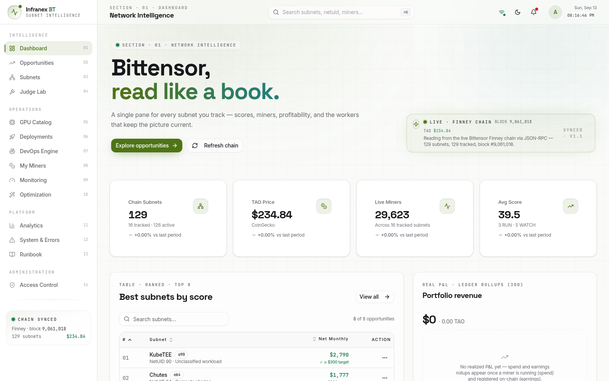
GPU Catalog 05→Provider API keys→paste key into the RunPod field→Save & verify
Get the key from runpod.io → Settings → API Keys → Create API Key, then paste it here. The platform validates the key on the spot and encrypts it at rest before storing anything. When validation passes you will see the green saved state on the RunPod row, and the GPU offer list (later steps) shows live prices.
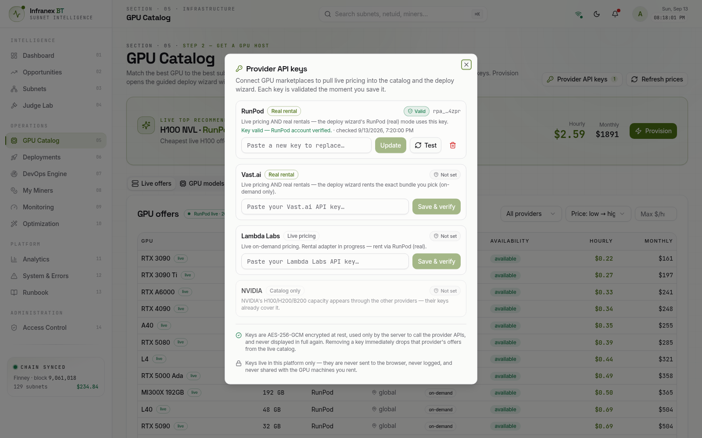
System & Errors 12→scroll to Wallet profiles→Add profile
Save a label plus the btcli wallet name and hotkey name you plan to use (example used throughout this guide: wallet infranex, hotkey miner). This is public metadata only — it makes the deploy wizard prefill your wallet name instead of you typing it every time. The platform cannot store mnemonics or private keys; the API rejects any attempt.
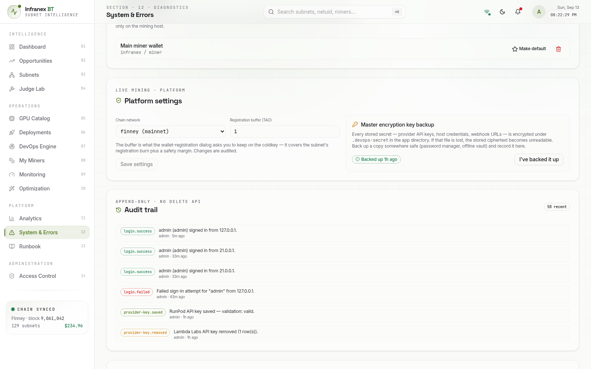
Create the Wallet & Fund It
The platform opens this same wizard for you later (Deployments → Start wallet setup) with every command generated and a copy button on each. You can follow either — the commands are identical. Do these four steps before renting the GPU, so the billing clock never runs while you set up keys.
Deployments 06→Mining Journey card→Start wallet setup
The wizard has 8 steps. Steps 1–4 happen on your laptop and cost nothing; steps 5–8 come back to the platform after the GPU is rented. Everything below walks the same eight steps with the exact commands.
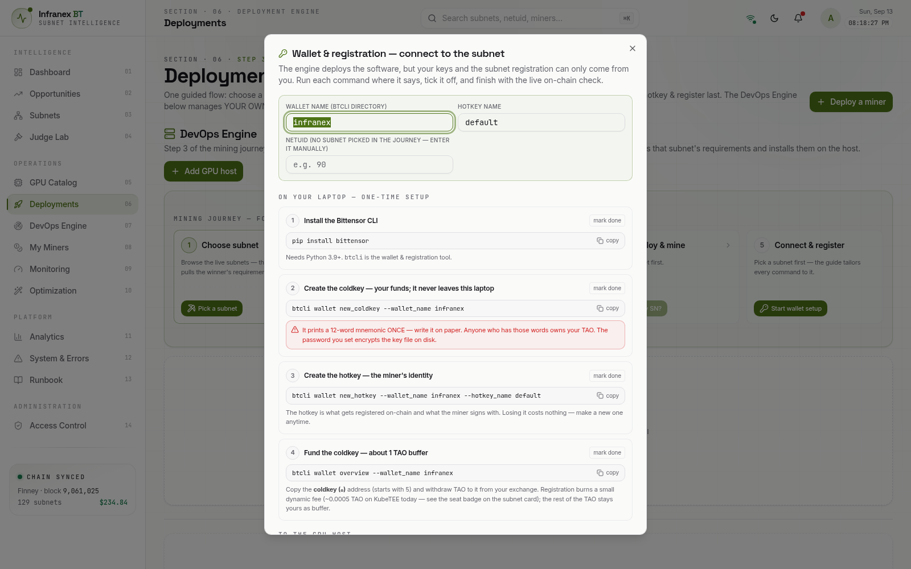
On your laptop terminal (Python 3.9+ required):
$ pip install bittensor Successfully installed bittensor-9.x.x substrate-interface-1.x.x ... $ btcli --version btcli v9.x.x
$ btcli wallet new_coldkey --wallet_name infranex Wallet dir: /home/you/.bittensor/wallets/infranex IMPORTANT: Store this 12-word mnemonic safely. It is the ONLY way to recover your funds if you lose access: 1 word 2 word 3 word 4 word 5 word 6 word 7 word 8 word 9 word 10 word 11 word 12 word Coldkey SS58 address: 5CA1abcdef...your-coldkey-address
$ btcli wallet new_hotkey --wallet_name infranex --hotkey_name miner Hotkey SS58 address: 5Grwabcdef...your-hotkey-address
The hotkey is what gets registered on-chain and what the miner signs with. Losing it costs nothing — you can create a new one anytime; only the coldkey is precious.
First, print your addresses:
$ btcli wallet overview --wallet_name infranex Wallet: infranex ✓- coldkey: 5CA1abcdef...your-coldkey-address ℏ- hotkey: 5Grwabcdef...your-hotkey-address
Then in Binance: Spot → Withdraw → TAO. Full click-by-click in Chapter 7. Send to the coldkey address (the ₵ one, starts with 5), amount = burn fee + ~2 TAO headroom. Skip ahead if you want the funding details now — the rest of this guide assumes TAO is on the coldkey.
Pick the Subnet & Rent the GPU
The platform gives you two doors into the same wizard: the Mining Journey card (recommended — it tracks your progress through all five steps) or Deploy a miner (the raw wizard). This guide uses the Journey.
Deployments 06→Mining Journey step 1→Pick a subnet→search chutes→SN64 Chutes · RTX 4090 24GB
The picker already knows which GPU matches: it literally offers SN64 Chutes — RTX 4090 24GB. Confirm with Mine this subnet. The journey card now shows SN64 · Chutes · needs ≥ 24 GB VRAM on step 1.
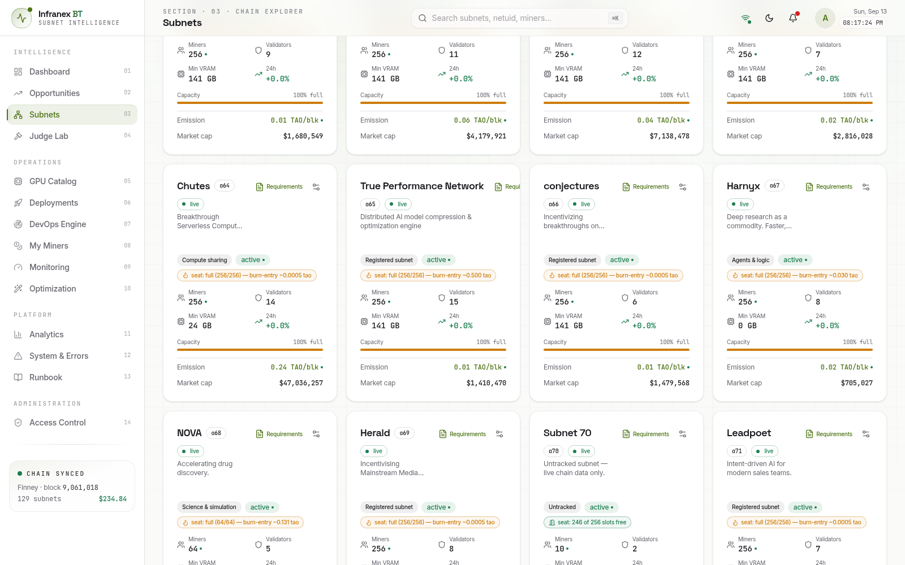
Deployments 06→Deploy a miner→Step 1 pick SN64 Chutes→Step 2 review requirements→Find a GPU
Step 2 shows the subnet's real requirements profile pulled live (what the miners on SN64 actually run). Step 3 lists offers meeting the 24 GB requirement, cheapest first — RTX 3090 at $0.22/hr, A6000 at $0.33/hr, RTX 4090 24 GB at ≈ $0.34/hr, and more.
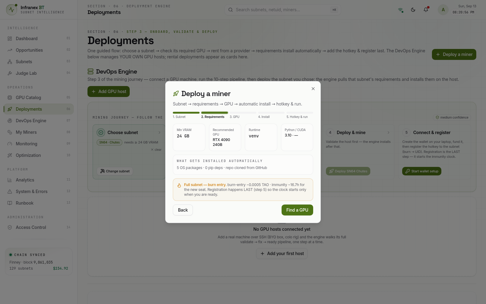
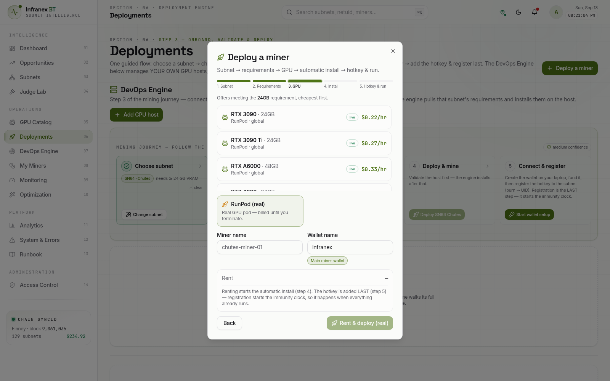
Select the RTX 4090 · 24GB · RunPod offer. Check the two name fields: Miner name is the label in your dashboard; Wallet name must match the btcli wallet you created in Part B (infranex in this guide — it prefills automatically from the wallet profile). Do not click the rent button until you are truly ready to start the meter.
Wizard step 3→select RunPod (real)→Rent & deploy (real)
From this click: the platform creates the pod on RunPod (billing starts at the offer's $/hr), then runs the automatic installer — about ten steps shown live in the wizard's Install step: pull the image, write the subnet config, generate the pod's own SSH keypair, install the Node Daemon, start the miner process. You do nothing here except watch the log tick. When it finishes, the deployment card shows started and the wizard sits on step 5 waiting for your hotkey.
Put the Hotkey on the Pod
The miner on the pod needs the hotkey keyfile to sign messages. This file travels directly from your laptop to the pod over SSH — it never passes through the web app, and the coldkey file stays on your laptop.
Wizard step 5→"Copy the key files to the host"→copy the scp command→run it on your laptop
The wizard generates the exact command with your pod's real IP, SSH port and path — it looks like:
$ scp -P 12345 ~/.bittensor/wallets/infranex/hotkeys/miner root@149.x.x.x:/root/.bittensor/wallets/infranex/hotkeys/ miner 100% 496 12.3KB/s 00:00
Mark the step done (the mark done button) and move to step 6. Only the hotkey file crossed over; your coldkey and mnemonic are still exclusively on your laptop.
Register LAST — Burn, UID, Verify
Your miner is installed and healthy — now you pay the registration fee. The burn is not a transfer you make by hand: it happens automatically inside the register command, taken from your coldkey the moment you confirm. In exchange your hotkey gets a UID on SN64, and both the immunity clock and your earning window start.
Wizard step 6→"Register the hotkey"→copy the command→run it on your laptop→confirm the fee
$ btcli subnets register --netuid 64 --wallet_name infranex --hotkey_name miner Your balance: 2.0493 TAO Recycle burn: 0.0005 TAO (subnet 64 entry cost) Do you want to register? [y/n]: y ✓ Registered. UID: 173 Netuid: 64 Block: 9,061,842
btcli always prints the exact current fee and asks for confirmation — nothing is spent until you type y. The fee is per registration: if the hotkey ever deregisters, re-registering costs the fee again. That is why the platform watches deregistration risk for you after this point.
Wizard step 7→Restart miner button on the deployment card→the engine runs it over SSH for you
The miner announces its axon (IP:port) on-chain at startup — that announcement is how validators find and score you. The platform shows restart pending until this happens; one click on the card and the engine does the rest. Prefer the terminal? The wizard also prints the exact SSH command.
Wizard step 8→paste your hotkey SS58 (the ℏ address from btcli wallet overview)→Verify
The platform scans the live metagraph itself and reports:
✓ REGISTERED — UID 173 on SN64 (Chutes) active: yes incentive: 0.0% (ramps up as validators score you) emission: 0 rAO block: #9,061,842
The only thing you ever paste into the platform is this public address — never a private key, never a mnemonic. Deployment status flips to started · UID · registered, the burn amount is recorded on the deployment, and the Mining Journey goes all-green.
You Are Live — What Watches What
From the verified-UID moment, the platform's worker passes run every 90 seconds and you stop being a babysitter. Here is the map of what watches what, so you know where to look when something moves.
| Card / panel | What it tells you |
|---|---|
| Dashboard — Portfolio revenue | Real P&L: spend accrued every 90 s vs earnings rolled up daily from chain emissions, with a 14-day bar strip. Costs appear within minutes of the pod starting; earnings appear once validators start scoring your UID. |
| Deployments — deployment card | Status (started), UID, registration state, install log, the Restart miner and Terminate controls. |
| My Miners — UID Defense | Your UID's live chain vectors: incentive, emission, deregistration-risk sparkline. If your axon stops serving, this flags it with a runbook action before validators forget you. |
| Monitoring / Runbook | Alert rules (pod down, axon unreachable, registration lost, spend anomaly) — wire a Slack/Discord webhook in the channels dialog so they reach you. |
| System & Errors — Audit trail | Every credential change, approval, and sign-in, append-only. If something moved, it is written here. |
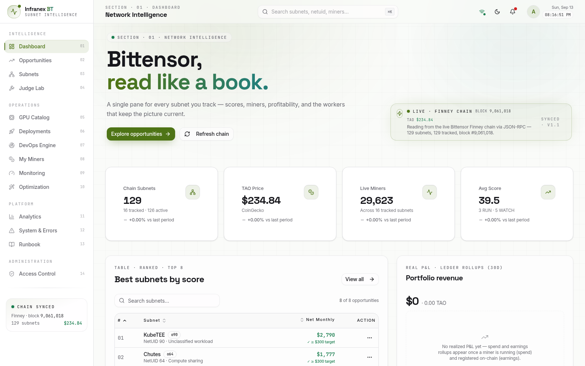
Living as a Miner — The Operator Routine
Once deployed, the machine lifecycle runs on rails: provisioning → installing (10 steps) → started → registered → earning. "Started" alone earns nothing — only "registered" puts your hotkey on the metagraph so validators can score you. From that moment your job is not babysitting a terminal; it is reading five surfaces every day and acting on alerts. The platform watches every 90 seconds — you decide.
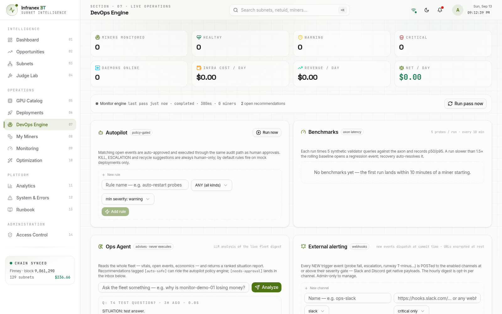
Deployments 06→your deployment card
The status line must read started · UID n · registered with all ten install steps ticked green. started without a UID means registration never landed — reopen the wallet wizard and run the register step again. A stopped card usually means the pod died or the RunPod balance hit zero — fund the account and press Restart miner; the engine does the SSH work in one click.
My Miners 08→UID Defense panel→risk level + sparkline
The engine scores your UID against the live metagraph on every pass and raises exactly six risk codes. Learn them once — they are the complete map of how a miner gets hurt:
| Risk code | Meaning → your action |
|---|---|
| NOT_REGISTERED critical | Hotkey missing from the metagraph → re-run registration. |
| ZERO_INCOME | Registered but earning 0 → normal in the first hours; if it persists past a day, restart and check the miner version. |
| EVICTABLE | Subnet at capacity and your immunity expired — you are a cut candidate → act fast: restart, update, improve; do not ignore this one. |
| UNDERPERFORMING | Scoring below your peers → update the miner revision; check subnet news. |
| INCENTIVE_COLLAPSE | Your incentive cratered → first check whether the whole subnet dipped (Subnets 03) or just you. |
| PERSISTENT_DECLINE | Days of falling incentive → consider a fresh deploy, a different GPU, or a different subnet. |
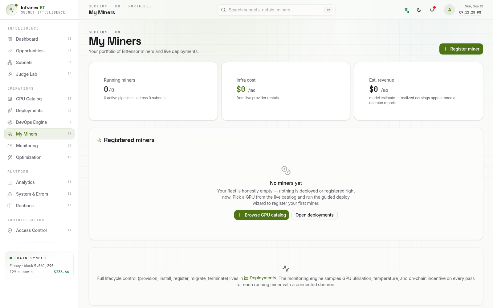
Monitoring 09→miner row→GPU util · temp · incentive
The engine samples each running miner every 90 seconds. GPU utilisation should spike regularly while the miner serves queries (60–95% bursts are normal) — a sustained flat 0% for hours means you are not being queried: check registration and version. Temperature is fine up to roughly 83–85 °C; sustained readings above that risk throttling — restart and re-check. Incentive (e.g. I: 0.0042) is your validator score: small daily growth is the goal. The four header cards give the money view: Daily Emission (at the live TAO/USD price), Monthly Cost (GPU rental), and Net Profit/mo with ROI% — for example Net +$4.10/mo · ROI 61%.
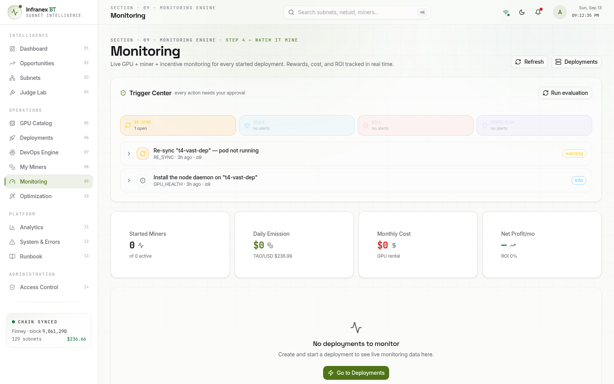
Dashboard 01→Portfolio revenue card
Spend accrues within minutes of the pod starting; earnings roll up daily from chain emissions once validators score you. A healthy first week looks like: spend climbing steadily (about $8/day at $0.34/hr) while earnings start near zero and inflect upward as the UID earns trust. A card that only ever climbs on the cost side after a week of registration is your signal to revisit G-1 through G-3.
An idle balance check takes ten seconds on the RunPod billing page. At $0.34/hr the burn is about $8.16/day, so keeping $17–25 of credit means never waking up to a stopped pod. If the balance reaches $0, RunPod stops the pod, the miner goes offline, and income stops — after topping up, one click on Restart miner brings it back. Put it on your calendar as a top-up reminder rather than trusting memory.
The Deeper Cadence
| When | Where | What & why |
|---|---|---|
| Weekly | My Miners 08 | Compare incentive Mon→Mon instead of staring daily — weekly deltas are the real trend line. |
| Weekly | Subnets 03 → SN64 | Is the subnet itself healthy (emission, price, registration count)? A dying subnet drags every UID down — this is also where a better home would show up. |
| Weekly | Laptop terminal | Hotkey balance check with btcli wallet overview (example below). Move TAO hotkey→coldkey only once meaningful amounts accumulate — never rush this in week 1. |
| Weekly | RunPod console | Any stopped pods you are done with? Terminate them — an idle 100 GB volume costs ≈ $7/month forever. |
| Weekly | System & Errors 12 → Audit | Scan logins and credential events; anything you do not recognize = rotate the provider key now. |
| Monthly | GPU Catalog 05 | Re-check RTX 4090 pricing — your $0.34/hr moves, and a cheaper identical GPU elsewhere is a valid OPTIMIZE move (Vast offers appear alongside). |
| Monthly | Deployments 06 → revisions | Apply miner revision updates when flagged — Chutes refreshes its model list and stale miners lose incentive fast. |
| Monthly | Analytics 11 | Month-over-month earned vs spent vs ROI — the grow / hold / migrate decision, made on data. |
$ btcli wallet overview --wallet_name infranex Coldkey Hotkey Network Stake α USD infranex miner finney 0.0831 $19.44 ← growing weekly ✓
Funding from Binance — Click by Click
This is a plain deposit into your own wallet — no burn happens here. The only two ways to get this wrong are the network and the address, so both are double-checked below.
Run btcli wallet overview --wallet_name infranex and copy the coldkey (₵) address — the one not labeled ℏ. Both start with 5; the ₵/ℏ marker is what tells them apart. If the marker is unclear, the address under your coldkey name is the funds wallet.
- Step 1: Binance app or web → Assets → Spot → Withdraw → search TAO (Bittensor).
- Step 2: choose Withdraw → Crypto. Paste your coldkey address. Use Binance mobile app or web — both work identically.
- Step 3: Network: choose "Bittensor (native)". This is the critical choice — TAO is its own chain. If a network dropdown shows anything else (a wrapped or bridged variant), stay on native Bittensor.
- Step 4: No memo/tag is needed. If Binance asks for one, you are on the wrong network — stop and re-check.
- Step 5: Amount: burn fee + ~2 TAO. Binance shows its withdrawal fee on the confirmation screen before you confirm.
- Step 6: Verify the first 6 and last 6 characters of the pasted address against the btcli output, then confirm (2FA). Arrival is typically minutes; Binance occasionally pauses TAO withdrawals during chain upgrades — the button greys out and resumes later.
Send 0.5 TAO, wait for it to land (check btcli wallet overview — the balance appears next to the coldkey), then send the rest. Costs one extra network fee; buys certainty on a chain you have never used.
$ btcli wallet overview --wallet_name infranex Wallet: infranex ✓- coldkey: 5CA1abcdef... → balance: 2.0493 TAO
Troubleshooting & Health Checks
The System & Errors view runs live checks on every dependency. It is also the first place to look when anything in the pipeline misbehaves — most incidents are one of the five below.
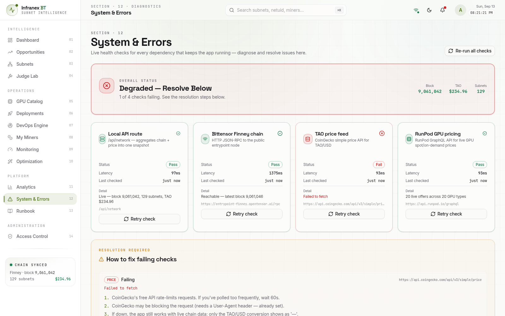
| Symptom | Fix |
|---|---|
| Verify says "Not registered yet" | Registration takes one block to land (~12 s). Wait and click Verify again. Also confirm you registered with the same wallet/hotkey names you pasted. |
| GPU step shows no offers | No provider key saved, or the saved key lost validity. GPU Catalog → Provider API keys → re-paste and Save & verify. |
| Install step stuck | Open the deployment card's install log — each of the ~10 steps shows its output. Pod-boot delays up to ~2 min are normal on RunPod; a red step tells you exactly which script failed. |
| Restart pending won't clear | The restart runs over SSH to the pod. Check the pod is running (RunPod console) and the deployment's ssh port is reachable; then press Restart miner again. |
| Emissions stay 0 | Normal for the first minutes — validators must probe your axon before scoring. Watch the incentive % on the UID Defense panel; if it stays flat for hours, check axon reachability from the Runbook panel. |